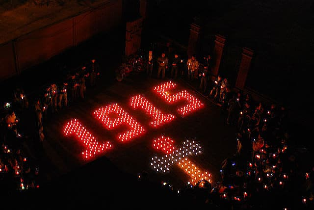
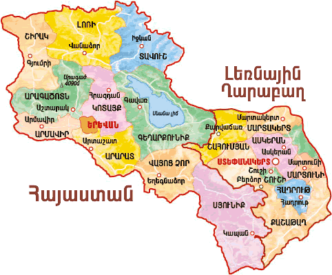

Բարի գալուստ Հայոց Պատմության Աշխարհ
Հայաստանը՝ պատմության գրկում գտնվող մի հինավուրց քաղաքակրթություն, ունեցել է փառավոր վերելքներ և ողբերգական անկումներ։ Այս կայքում Դուք կարող եք ուսումնասիրել մեր բազմադարյան պատմությունը՝ դարաշրջան առ դարաշրջան։
Նախապատմություն
Հայկական լեռնաշխարհը բնակեցված է եղել դեռևս պալեոլիթյան ժամանակաշրջանից։ Արենիի քարանձավում հայտնաբերվել են աշխարհի ամենահին կոշիկը և գինեգործարան։ Շումերական սեպագիր աղբյուրներում հիշատակվում է Արատտա երկիրը, որը, ըստ որոշ տեսությունների, համապատասխանում է Հայաստանի տարածքին։
Մեծ Հայք և Թագավորություններ
Հայոց պետականության արմատները հասնում են Ուրարտու թագավորությանը։ Հետագայում կազմավորվեցին Արտաշեսյան, Արշակունի և Բագրատունի թագավորությունները։
- Տիգրան Մեծ — Մ.թ.ա. 1-ին դարում Հայաստանը վերածեց հզոր կայսրության՝ հասնելով Միջերկրական։
- 301 թ․ — Հայաստանը առաջինն ընդունեց քրիստոնեությունը՝ որպես պետական կրոն։
- Անի քաղաքը՝ հազար ու մի եկեղեցու քաղաք։
Միջնադարյան Հայաստան
Արաբական արշավանքներից հետո Հայաստանը վերականգնեց պետականությունը Բագրատունիների ղեկավարությամբ։ 11-13-րդ դարերում Կիլիկյան Հայաստանը դարձավ մշակութային և քաղաքական կենտրոն։
- Անիի ճարտարապետություն՝ միջնադարի գլուխգործոց
- Մեսրոպ Մաշտոց, Անանիա Շիրակացի, Գրիգոր Նարեկացի
- Կիլիկյան թագավորություն՝ արևմտյան դիվանագիտության առաջամարտիկ
Հայոց Ցեղասպանություն
1915 թ.՝ Օսմանյան կայսրությունը սկսեց հայերի զանգվածային բնաջնջում։ Մոտ 1.5 միլիոն հայեր սպանվեցին կամ տեղահանվեցին։
Արցախյան պատերազմներ
1990-ականներին և 2020 թ․ տեղի ունեցած պատերազմները մեծ ազդեցություն ունեցան ՀՀ քաղաքականության և անվտանգության վրա։ Արցախի բնակչությունն իր ինքնորոշման իրավունքի համար պայքարեց անկախության համար։
Ժամանակակից Հայաստան
1991 թ․ անկախության հռչակումից հետո Հայաստանը մուտք գործեց նոր դարաշրջան։ Բազմաթիվ քաղաքական ու սոցիալական մարտահրավերներից հետո երկիրը շարունակում է զարգանալ՝ միաժամանակ պահպանելով իր պատմամշակութային ժառանգությունը։
Պատմական դեմքեր
- Մեսրոպ Մաշտոց – Հայոց գրերի ստեղծող
- Տիգրան Մեծ – Մեծ Հայաստանը տարածած արքան
- Գարեգին Նժդեհ – Ազատամարտիկ և գաղափարախոս
- Հովհաննես Թումանյան – Բանաստեղծ և հասարակական գործիչ
Պատկերասրահ
Ժամանակացույց
- Մ.թ.ա. 9-րդ դար — Ուրարտու
- Մ.թ.ա. 95-55 — Տիգրան Մեծ
- 301 — Քրիստոնեություն՝ պետական կրոն
- 1915 — Ցեղասպանություն
- 1991 — Անկախություն
- 2020 — Արցախյան երկրորդ պատերազմ
Պատահական պատմական փաստ
Սեղմեք կոճակը՝ իմանալու մի նոր հետաքրքիր փաստ:
Կապ մեզ հետ
Եթե ունեք հարցեր կամ առաջարկներ, կարող եք գրել՝ begpashinyan@mail.ru
🧠 Փորձեք Ձեր գիտելիքները Հայոց պատմությունից
Հարցը կցուցադրվի այստեղ